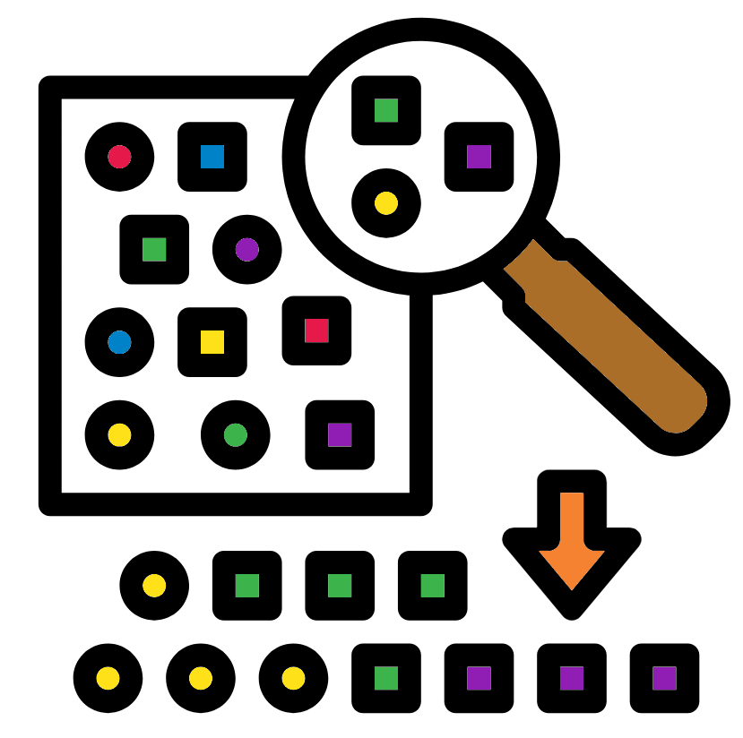

Chapter 3 High coverage
Low sequence coverage (<20X) can cause assembly issues due to:
- Under represented areas of the genomes.
- Sequencing will not lead to uniform coverage across the genome and so the lower coverage areas may not be missing of have very low coverage.
- Errors cannot be corrected/polished.
- Low coverage may mean there are areas which do not have enough sequences to produce an accurate consensus.
Low sequence coverage can be corrected by carrying out more sequencing.
High sequence coverage (>100X) may seem perfect but it can cause assembly issues. As coverage increases the number of errors in the data increases (even if the % of errors is stable). If data contains a 10% error rate then 100 megabases will contain 10 megabases of errors whilst 1 gigabase will contain 100 megabases of errors. It is a lot easier for an assembler to determine what may be errors if there is a smaller total amount of them.
The errors will confuse the assembler and it may create create an assembly graph that looks like a bowl of spaghetti rather than one long spaghetti strand. If you provide enough coverage the assembler may never finish or it will crash due to memory limitations as it tries to disentangle the graph.
How do we prevent this? Read on to find out one method.
3.1 Detecting high coverage
To detect high coverage (>100X) you will need to first know the estimated size of your genome. Then you can look at the sequencing summary to hopefully find the number of bases in your sequencing data. If you do not have this we can use some quick unix commands to do this.
#Move into the directory with your ecoli reads
cd ~/bacterial_assembly/standard_workflow/ecoli_reads
#Print out to screen the number of bases in ecoli.fastq
cat ecoli.fastq | paste - - - - | cut -f 2 | wc -cThe command consists of multiple parts with the parts piping (|) their outputs to be the next command's input. The parts are:
cat ecoli.fastq: readecoli.fastqto use it as the initial input for the commands.paste - - - -: This separates the lines into columns. Four columns are specified here by- - - -. As each fastq entry consists of four lines this works perfectly to create a header, a sequence, a quality header, and a quality column.cut -f 2:cutwill extract our field/column (-f) of choice. In this case it is the 2nd field as all the sequence data is in the second field. Therefore we have removed all non sequence information.wc -c:wcstands for word count and the-coptions stands for characters. This counts all the characters. This will therefore count all the bases within our fastq file.
With this we can find out if we may have too much coverage. In this case 139,252,345bp is about 30X for a 4.6m genome (E.coli) so we are not worried about the coverage being too high.
3.2 Subsampling

To reduce the coverage we can subsample the reads. This is the act of randomly extracting reads (without replacement) to a set number or fraction. As the process is random it should not add in any bias (or at least any more bias than is present in sequencing anyway).
We will use seqtk along with its option subsample to extract half (0.5) of the ecoli reads in the hopes we will be left with slightly more than 50Mbp.
Note: Use the Conda environment bacterial_assembly.
seqtk sample -s 100 ecoli.fastq 0.5 > ecoli_subsample.fastqParameters
-s 100: This indicates the random seed to be used for subsampling.- This can be any number and is arbitrarily chosen.
- With Paired reads this number must be the same for the forward and reverse reads. This is to ensure the two files have matching reads.
ecoli.fastq: The first flagless parameter to indicate the input fastq file.0.5: The second flagless parameter to indicate the subsample size.- If the number is a fraction (0.5, 0.2, 0.87 etc.) then the specified fraction of reads (compared to the intial total) will be extracted.
- if the number is a whole number (1, 100, 98762 etc.) the specified number of reads will be extracted.
As we have extracted by the number/fraction of reads and the size of PacBio and ONT reads vary we may not get the number of bases we desire. It is therefore always good to count the number of bases in our subsampled file.
cat ecoli_subsample.fastq | paste - - - - | cut -f 2 | wc -cTasks
- Using
seqtk sampleattempt to subsample the data so you retain ~10X coverage (44-48Mbp). What fraction/number did you use? - Try out different seed numbers, with the same subsample number/fraction, to see the effect it has on subsampling.
Note There is probably no reason you would want 10X in real life this is just for practice.
I generally suggest only carrying out random subsampling if you have very high coverage (>100X) and trying to get a coverage close to 100X (95-100X). It does not have to be very exact as even a coverage of 80X would be very good for a bacterial genome.